superse超集（pip下载 0.30版本）
下载源码
https://github.com/apache/superset.git
选择0.37分支下载zip包
解压改名：
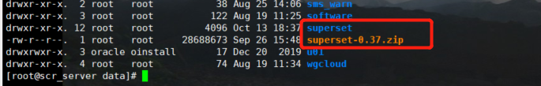!]
##安装python
1.下载安装包上传到服务器
[root@scr_server data]# ll |grep Python-3.7.6.tgz
-rw-r--r--. 1 root root 23148187 Sep 17 14:20 Python-3.7.6.tgz
[root@scr_server data]#
- 1
- 2
- 3
2.准备编译环境
yum -y install zlib-devel bzip2-devel openssl-devel ncurses-devel sqlite-devel readline-devel tk-devel gcc make
yum install libffi-devel
yum install bzip2-devel
yum install sqlite-devel
- 1
- 2
- 3
- 4
3.安装
1.解压
tar -zxvf Python-3.7.6.tgz
- 1
2.进入解压包修改文件 防止ssl问题的产生
[root@scr_server Modules]# pwd
/data/Python-3.7.6/Modules
[root@scr_server Modules]#
- 1
- 2
- 3
vim Setup &&vim Setup.dist 都修改以下内容 将这几行注释去掉 一共5行
_socket socketmodule.c
# Socket module helper for SSL support; you must comment out the other
# socket line above, and possibly edit the SSL variable:
SSL=/usr/local/ssl
_ssl _ssl.c \
-DUSE_SSL -I$(SSL)/include -I$(SSL)/include/openssl \
-L$(SSL)/lib -lssl -lcrypto
- 1
- 2
- 3
- 4
- 5
- 6
- 7
- 8
3.编译安装
#进入解压目录 其中--prefix是Python的安装目录
./configure --prefix=/data/python37
make
make install
- 1
- 2
- 3
- 4
4.创建软连接
ln -s /data/python37/bin/pip3.7 /usr/bin/pip3
ln -s /data/python37/bin/python3.7 python3
- 1
- 2
5.镜像源
pip豆瓣源：在安装命令后添加
-i http://pypi.douban.com/simple/ --trusted-host pypi.douban.com
安装步骤
1.安装容器和密码验证工具，建议直接按照以下指令顺序执行就好
# yum upgrade python-setuptools
# yum install gcc gcc-c++ libffi-devel python-devel python-pip python-wheel openssl-devel cyrus-sasl-devel openldap-devel
# pip3 install cryptography
# pip3 install virtualenv
- 1
- 2
- 3
- 4
2.新建一个容器空间进行操作
（网上一堆的教程都是将superset安装在容器之中，可能是为了环境隔离吧，因为中间需要使用的第三方依赖库还是很多的，避免影响了原始业务系统环境吧
# python3 -m venv venv -- 新建一个名为venv的容器空间，同时也会新建在当前目录下新建一个venv的文件夹，请提前切换好工作文件夹
# . venv/bin/activate -- 进入venv的容器环境 下面步骤都在容器环境下 yum命令除外
# pip3 install superset -- 容器环境下安装superset
# pip3 install -r requirements.txt -- 安装依赖包
- 1
- 2
- 3
- 4
3.配置数据源以及更改元数据库为mysql
配置数据源：
#mysql:
pip3 install pymysql mysqlclient
#mysql数据库以下表加字段：slack_channel(邮件发送会使用)
#dashboard_email_schedules
#slice_email_schedules
#postgresql
yum install postgresql-devel
pip3 install psycopg2
#oracle
pip3 install cx_oracle
#下载文件
https://www.oracle.com/database/technologies/instant-client/linux-x86-64-downloads.html
#在容器环境下：
mkdir -p /opt/oracle
将instantclient-basic-linux.x64-21.3.0.0.0.zip上传到/opt/oracle
cd /opt/oracle
unzip instantclient-basic-linux.x64-21.3.0.0.0.zip
sh -c "echo /opt/oracle/instantclient_21_3 > /etc/ld.so.conf.d/oracle-instantclient.conf"
ldconfig
vim /etc/profile
# 在最后一行添加以下内容：
# export PATH=/opt/oracle/instantclient_21_3:$PATH
source /etc/profile

- 1
- 2
- 3
- 4
- 5
- 6
- 7
- 8
- 9
- 10
- 11
- 12
- 13
- 14
- 15
- 16
- 17
- 18
- 19
- 20
- 21
- 22
- 23
- 24
修改元数据库：
#创建superset数据库
#之后配置文件的修改在下一步中
- 1
- 2
4.修改配置文件
修改config：vim /data/superset/venv/lib/python3.7/site-packages/superset/config.py
元数据库地址：
#修改元数据库地址
#SQLALCHEMY_DATABASE_URI = 'sqlite:///' + os.path.join(DATA_DIR, 'superset.db')
SQLALCHEMY_DATABASE_URI = 'mysql://username:password@ip/superset?charset=utf8'
#SQLALCHEMY_EXAMPLES_URI = None ##这个必须注销修改为下面的配置 否则superset还会使用sqlite数据库
SQLALCHEMY_EXAMPLES_URI = "mysql://username:password@ip/superset?charset=utf8"
- 1
- 2
- 3
- 4
- 5
修改schedules：vim /data/superset/venv/lib/python3.7/site-packages/superset/tasks/schedules.py
#添加下面命令
options.add_argument("--no-sandbox")
- 1
- 2
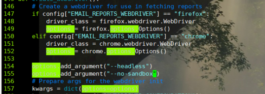
5.初始化
# superset db upgrade -- 初始化db环境
# export FLASK_APP=superset --账户设定
# flask fab create-admin --创建账户按提示输入账密就好
# superset load_examples --下载样例数据，可不执行
# superset init --superset环境初始化
# superset run -p 8088 -h 192.168.2.1 --with-threads -- superset 启动（这里面我指定了端口和IP，分别是-p 和 -h 参数，建议指定成自己的服务器IP和某个端口，网页访问的时候，**还需要将这个端口对外开放，不然你本地登录网页访问会无法成功**）
#更改ip端口：进入容器的venv/superset/lib/python3.7/site-packages/flask/cli.py
#@click.option("--host", "-h", default="0.0.0.0", help="The interface to bind to.")
#@click.option("--port", "-p", default=9230, help="The port to bind to.")
- 1
- 2
- 3
- 4
- 5
- 6
- 7
- 8
- 9
深度汉化
1.下载messages文件
messages.json和messages.po
在githttps://github.com/apache/superset.git上获取最新版本的messages文件 （master分支）
获取文件地址为
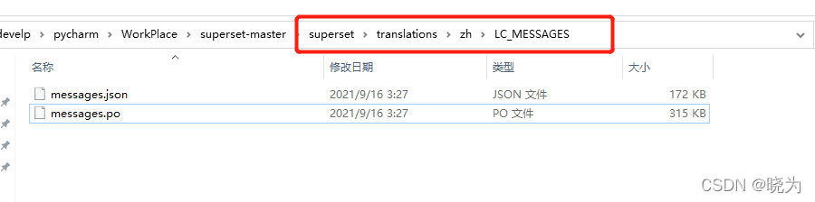
2.修改配置文件
修改config：vim /data/superset/venv/lib/python3.7/site-packages/superset/config.py
修改默认语言为中文：
# Setup default language
BABEL_DEFAULT_LOCALE = "zh"
- 1
- 2
替换message文件：
cd /data/superset/venv/lib/python3.7/site-packages/superset/translations/zh/LC_MESSAGES
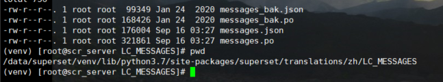
3.重新编译语言包
cd /data/superset/venv/lib/python3.7/site-packages/superset
pybabel compile -d translations
- 1
- 2
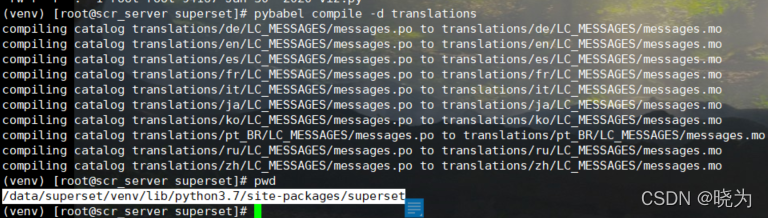
添加邮件功能
superset0.37版本中有邮件功能 只是默认关闭 需要开启
1.开启邮件功能
修改config：vim /data/superset/venv/lib/python3.7/site-packages/superset/config.py
开启邮件：
# Enable / disable scheduled email reports
ENABLE_SCHEDULED_EMAIL_REPORTS = True
- 1
- 2
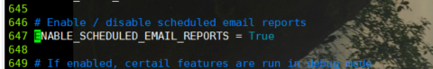
配置SMTP为网易邮箱
注意：此处的password是邮箱的授权码而不是邮箱密码 并且大概率出现554, b’DT:SPM（网易认定为垃圾邮件不予发出，阿里云企业邮箱无此问题）
smtp_ssl为False时： 这样对应端口要注意对应
# smtp server configuration
EMAIL_NOTIFICATIONS = True # all the emails are sent using dryrun
SMTP_HOST = "smtp.163.com"
SMTP_STARTTLS = True
SMTP_SSL = False
SMTP_USER = "邮箱用户"
SMTP_PORT = 25
SMTP_PASSWORD = "密码 不是的登录密码是smtp密码"
#将from从glzt_superset@163.com修改为邮件格式得glzt_superset<glzt_superset@163.com>
#否则会出现smtplib.SMTPDataError: (554, b'DT:SPM 163 smtp10问题
SMTP_MAIL_FROM = "邮箱用户"
- 1
- 2
- 3
- 4
- 5
- 6
- 7
- 8
- 9
- 10
- 11
- 12
smtp_ssl为True时： 这样对应端口要注意对应 也要修改源码
# smtp server configuration
EMAIL_NOTIFICATIONS = True # all the emails are sent using dryrun
SMTP_HOST = "smtp.163.com"
SMTP_STARTTLS = True
SMTP_SSL = True
SMTP_USER = "邮箱用户"
SMTP_PORT = 465
SMTP_PASSWORD = "密码 不是的登录密码是smtp密码"
#将from从glzt_superset@163.com修改为邮件格式得glzt_superset<glzt_superset@163.com>
#否则会出现smtplib.SMTPDataError: (554, b'DT:SPM 163 smtp10问题
SMTP_MAIL_FROM = "邮箱用户"
- 1
- 2
- 3
- 4
- 5
- 6
- 7
- 8
- 9
- 10
- 11
修改源码vim /data/superset/venv/lib/python3.7/site-packages/superset/utils/core.py
#注销下面这行
#if SMTP_STARTTLS:
# s.starttls()
- 1
- 2
- 3
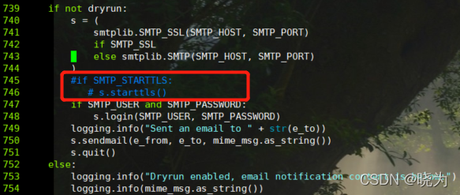
配置SMTP邮箱为阿里云企业邮箱（推荐）
注意：此处的password是邮箱的登录密码 不会因为识别为垃圾邮件无法发送
SMTP_SSL为True或者是False时与上面的网易邮箱配置一致
#企业邮箱地址为smtp.mxhichina.com 普通阿里云地址为smtp.aliyun.com
SMTP_HOST = "smtp.mxhichina.com"
SMTP_STARTTLS = True
SMTP_SSL = True
SMTP_USER = "邮箱用户"
SMTP_PORT = 465
SMTP_PASSWORD = "登录密码就可以"
SMTP_MAIL_FROM = "邮箱用户"
- 1
- 2
- 3
- 4
- 5
- 6
- 7
- 8
邮件看板地址
注意：这个配置是发送邮件时寻找看板或者图表的地址 也是superset登录地址
# The base URL to query for accessing the user interface
WEBDRIVER_BASEURL = "http://ip:9230/"
- 1
- 2
2.配置Celery（调度用）
环境准备
1.celery需要celery worker celery beat celery flower 如果没有需要pip3下载
2.celery需要中间件进行调度控制 我们选择redis
3.安装redis （网上搜索教程 可以有密码可以无密码）本次安装地址为 ip 密码123456
修改配置文件
修改config：vim /data/superset/venv/lib/python3.7/site-packages/superset/config.py
redis://:123456@ip:6379/0 如果无密码的话redis://ip:6379/
class CeleryConfig: # pylint: disable=too-few-public-methods
BROKER_URL = "redis://:123456@ip:6379/0"
CELERY_IMPORTS = ("superset.sql_lab", "superset.tasks")
CELERY_RESULT_BACKEND = "redis://:123456@ip:6379/0"
CELERYD_LOG_LEVEL = "DEBUG"
CELERYD_PREFETCH_MULTIPLIER = 1
CELERY_ACKS_LATE = True
CELERY_ANNOTATIONS = {
"sql_lab.get_sql_results": {"rate_limit": "100/s"},
"email_reports.send": {
"rate_limit": "1/s",
"time_limit": 120,
"soft_time_limit": 150,
"ignore_result": True,
},
}
CELERYBEAT_SCHEDULE = {
"email_reports.schedule_hourly": {
"task": "email_reports.schedule_hourly",
"schedule": crontab(minute=1, hour="*"),
}
}
CELERY_CONFIG = CeleryConfig # pylint: disable=invalid-name
- 1
- 2
- 3
- 4
- 5
- 6
- 7
- 8
- 9
- 10
- 11
- 12
- 13
- 14
- 15
- 16
- 17
- 18
- 19
- 20
- 21
- 22
- 23
3.安装浏览器驱动
为了可以渲染看板，需要在superset所在环境下本地安装浏览器驱动。
修改配置文件
修改config：vim /data/superset/venv/lib/python3.7/site-packages/superset/config.py
将浏览器修改为chrome 默认为firefox
#Limitations: unable to generate screenshots of elements
EMAIL_REPORTS_WEBDRIVER = "chrome"
- 1
- 2
chrome 浏览器在root用户下启动会报错
修改schedules：vim /data/superset/venv/lib/python3.7/site-packages/superset/tasks/schedules.py
添加下面一行：
options.add_argument("--no-sandbox")
- 1
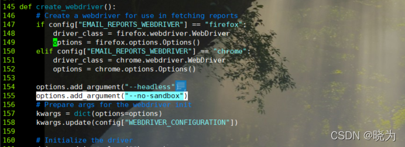
安装驱动
注意：两者版本一定要保证一致
从google官方网站下载google chrome安装包
http://www.google.cn/chrome/browser/desktop/index.html
再安装chromedriver
http://chromedriver.chromium.org/
安装之后将软连接挂在/usr/bin下 或者chromedriver直接复制一份到此目录
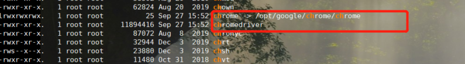
安装成功输入 chrome -version 和 chromedriver -version验证一下
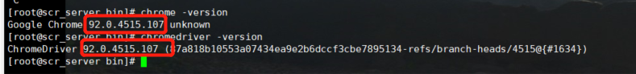
4.发送邮件
开启celery
开启要在容器环境下开启：
在此目录下：/data/superset/venv/lib/python3.7/site-packages/superset
如果在/data/superset目录下读取的就不是容器环境下的程序文件了
#执行组件
celery --app=superset.tasks.celery_app:app worker --pool=prefork -O fair -c 4 -l DEBUG
celery --app=superset.tasks.celery_app:app beat
#监控组件 端口号5555
celery flower --app=superset.tasks.celery_app:app
- 1
- 2
- 3
- 4
- 5
修改配置
邮件发送内容头出现 Explore in Superset；可以改为需要的名称
修改schedules：vim /data/superset/venv/lib/python3.7/site-packages/superset/tasks/schedules.py
#将Explore in Superset 改为 需要的名字
#共有几处都替换
- 1
- 2
运行命令
#进入目录
cd /data/superset/
#进入容器环境
. venv/bin/activate
#启动superset
nohup superset run >/data/superset/superset.log 2>&1 &
#进入celery目录
cd /data/superset/venv/lib/python3.7/site-packages/superset
#启动celery worker
nohup celery --app=superset.tasks.celery_app:app worker --pool=prefork -O fair -c 4 -l info >/data/superset/celery_worker.log 2>&1 &
#启动celery beat
nohup celery --app=superset.tasks.celery_app:app beat >/data/superset/celery_beat.log 2>&1 &
#启动celery flower
nohup celery --app=superset.tasks.celery_app:app flower >/data/superset/celery_flower.log 2>&1 &
#停止所有命令
ps -ef | grep superset | grep -v 'grep' | awk '{print $2}' | xargs -I {} kill -9 {}
#停止celery
ps -ef | grep celery | grep -v 'grep' | awk '{print $2}' | xargs -I {} kill -9 {}
- 1
- 2
- 3
- 4
- 5
- 6
- 7
- 8
- 9
- 10
- 11
- 12
- 13
- 14
- 15
- 16
- 17
- 18
- 19
MAster源码
下载源码
与上面版本方法一致。不过要下载master主分支源码
安装python
与上面版本安装过程一致
不过master要安装3.8及之后版本
安装编译步骤
可以在下载的源码中找到CONTRIBUTING.md文档 有相关内容
摘录下来：
后端：
# Create a virtual environment and activate it (recommended)
#python38是我安装的python3.8版本 给出的软连接名称
python38 -m venv venv # setup a python3 virtualenv
source venv/bin/activate
#之后都用pip来完成 不可用安装的pip38
# Install external dependencies
pip install -r requirements/testing.txt
# Install Superset in editable (development) mode
pip install -e .
# Create an admin user in your metadata database (use `admin` as username to be able to load the examples)
superset fab create-admin
# Initialize the database
superset db upgrade
# Create default roles and permissions
superset init
- 1
- 2
- 3
- 4
- 5
- 6
- 7
- 8
- 9
- 10
- 11
- 12
- 13
- 14
- 15
- 16
- 17
- 18
- 19
- 20
- 21
- 22
前端：
首先保证版本一致
First, be sure you are using the following versions of Node.js and npm:
Node.js: Version 16npm: Version 7
之后：
# From the root of the repository
cd superset-frontend
# Install dependencies from `package-lock.json`
npm ci
- 1
- 2
- 3
- 4
- 5
之后：
There are three types of assets you can build:
npm run build: the production assets, CSS/JSS minified and optimizednpm run dev-server: local development assets, with sourcemaps and hot refresh supportnpm run build-instrumented: instrumented application code for collecting code coverage from Cypress tests
使用第一个命令即可！
再之后就可以前端启动了
前端启动出现问题：
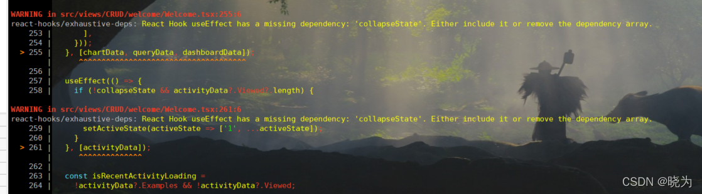
不影响，如果不喜欢看可以在vim webpack.config.js 注释eslint相关
出现问题：
![[外链图片转存失败,源站可能有防盗链机制,建议将图片保存下来直接上传(img-s2oYFb8h-1640844630508)(C:\Users\ThinkPad\Desktop\superset二次开发\images\20211022100658.png)]](./superset源码安装部署-CSDN博客_files/1528929a4cf5489f830968ff4233096d.png)
不用理会。看着碍眼可以寻找解决办法
数据源
#master版本使用pip安装即可
pip install pymysql mysqlclient
#postgresql
yum install postgresql-devel
pip install psycopg2
#oracle
pip install cx_oracle
- 1
- 2
- 3
- 4
- 5
- 6
- 7
配置文件
上面版本的相关配置在这里对应
配置文件：
vim /data/superset-master/superset/config.py
#修改元数据库地址
#SQLALCHEMY_DATABASE_URI = 'sqlite:///' + os.path.join(DATA_DIR, 'superset.db')
SQLALCHEMY_DATABASE_URI = 'mysql://username:password@ip/supersetMaster?charset=utf8'
#SQLALCHEMY_EXAMPLES_URI = None ##这个必须注销修改为下面的配置 否则superset还会使用sqlite数据库
SQLALCHEMY_EXAMPLES_URI = "mysql://username:password@ip/supersetMaster?charset=utf8"
#邮件相关
# Enable / disable scheduled email reports
ENABLE_SCHEDULED_EMAIL_REPORTS = True
# smtp server configuration
EMAIL_NOTIFICATIONS = True # all the emails are sent using dryrun
SMTP_HOST = "smtp.mxhichina.com"
SMTP_STARTTLS = True
SMTP_SSL = True
SMTP_USER = "邮件名称"
SMTP_PORT = 465
SMTP_PASSWORD = "密码"
SMTP_MAIL_FROM = "邮件名称"
#邮件地址
# The base URL to query for accessing the user interface
WEBDRIVER_BASEURL = "http://ip:9000/"
#浏览器驱动
# The webdriver to use for generating reports. Use one of the following
# firefox
# Requires: geckodriver and firefox installations
# Limitations: can be buggy at times
# chrome:
# Requires: headless chrome
# Limitations: unable to generate screenshots of elements
WEBDRIVER_TYPE = "chrome"
# Additional args to be passed as arguments to the config object
# Note: these options are Chrome-specific. For FF, these should
# only include the "--headless" arg
WEBDRIVER_OPTION_ARGS = ["--headless", "--marionette" ,"--no-sandbox"]
#celery相关
# Default celery config is to use SQLA as a broker, in a production setting
# you'll want to use a proper broker as specified here:
# http://docs.celeryproject.org/en/latest/getting-started/brokers/index.html
class CeleryConfig: # pylint: disable=too-few-public-methods
BROKER_URL = "redis://:123456@ip:6379/1"
CELERY_IMPORTS = ("superset.sql_lab", "superset.tasks")
CELERY_RESULT_BACKEND = "redis://:123456@ip:6379/1"
CELERYD_LOG_LEVEL = "DEBUG"
CELERYD_PREFETCH_MULTIPLIER = 1
CELERY_ACKS_LATE = True
CELERY_ANNOTATIONS = {
"sql_lab.get_sql_results": {"rate_limit": "100/s"},
"email_reports.send": {
"rate_limit": "1/s",
"time_limit": int(timedelta(seconds=120).total_seconds()),
"soft_time_limit": int(timedelta(seconds=150).total_seconds()),
"ignore_result": True,
},
}
CELERYBEAT_SCHEDULE = {
"email_reports.schedule_hourly": {
"task": "email_reports.schedule_hourly",
"schedule": crontab(minute=1, hour="*"),
},
"reports.scheduler": {
"task": "reports.scheduler",
"schedule": crontab(minute="*", hour="*"),
},
"reports.prune_log": {
"task": "reports.prune_log",
"schedule": crontab(minute=0, hour=0),
},
}
CELERY_CONFIG = CeleryConfig # pylint: disable=invalid-name
#celery定时以及邮件发送的最小粒度
#改为0的话每隔5分钟也可生效
# Email reports - minimum time resolution (in minutes) for the crontab
#
# Warning: This config key is deprecated and will be removed in version 2.0.0"
EMAIL_REPORTS_CRON_RESOLUTION = 0
#实现动态sql查询
"ENABLE_TEMPLATE_PROCESSING": True
#实现下钻
"DASHBOARD_DRILL_DOWN": True
- 1
- 2
- 3
- 4
- 5
- 6
- 7
- 8
- 9
- 10
- 11
- 12
- 13
- 14
- 15
- 16
- 17
- 18
- 19
- 20
- 21
- 22
- 23
- 24
- 25
- 26
- 27
- 28
- 29
- 30
- 31
- 32
- 33
- 34
- 35
- 36
- 37
- 38
- 39
- 40
- 41
- 42
- 43
- 44
- 45
- 46
- 47
- 48
- 49
- 50
- 51
- 52
- 53
- 54
- 55
- 56
- 57
- 58
- 59
- 60
- 61
- 62
- 63
- 64
- 65
- 66
- 67
- 68
- 69
- 70
- 71
- 72
- 73
- 74
- 75
- 76
- 77
- 78
- 79
- 80
- 81
修改源码：
修改源码vim /data/superset-master/superset/utils/core.py
#注销下面这行
#if SMTP_STARTTLS:
# s.starttls()
- 1
- 2
- 3
##运行命令
#前端
nohup npm run dev-server >/data/supersetDrill/superset-master/superset_fron.log 2>&1 & exit
#后端
nohup superset run -h localhost -p 8088 >/data/supersetDrill/superset-master/superset.log 2>&1 &
#启动celery worker
nohup celery --app=superset.tasks.celery_app:app worker --pool=prefork -O fair -c 4 -l info >/data/supersetDrill/superset-master/celery_worker.log 2>&1 &
#启动celery beat
nohup celery --app=superset.tasks.celery_app:app beat >/data/supersetDrill/superset-master/celery_beat.log 2>&1 &
#停止所有命令
ps -ef | grep superset | grep -v 'grep' | awk '{print $2}' | xargs -I {} kill -9 {}
#停止celery
ps -ef | grep celery | grep -v 'grep' | awk '{print $2}' | xargs -I {} kill -9 {}
- 1
- 2
- 3
- 4
- 5
- 6
- 7
- 8
- 9
- 10
- 11
- 12
- 13
- 14


 561
561


 被折叠的 0 条评论
为什么被折叠?
被折叠的 0 条评论
为什么被折叠?
 到【灌水乐园】发言
到【灌水乐园】发言